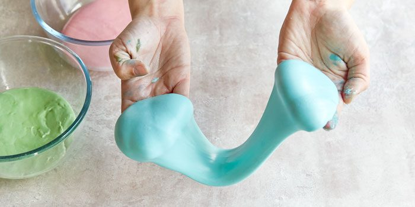
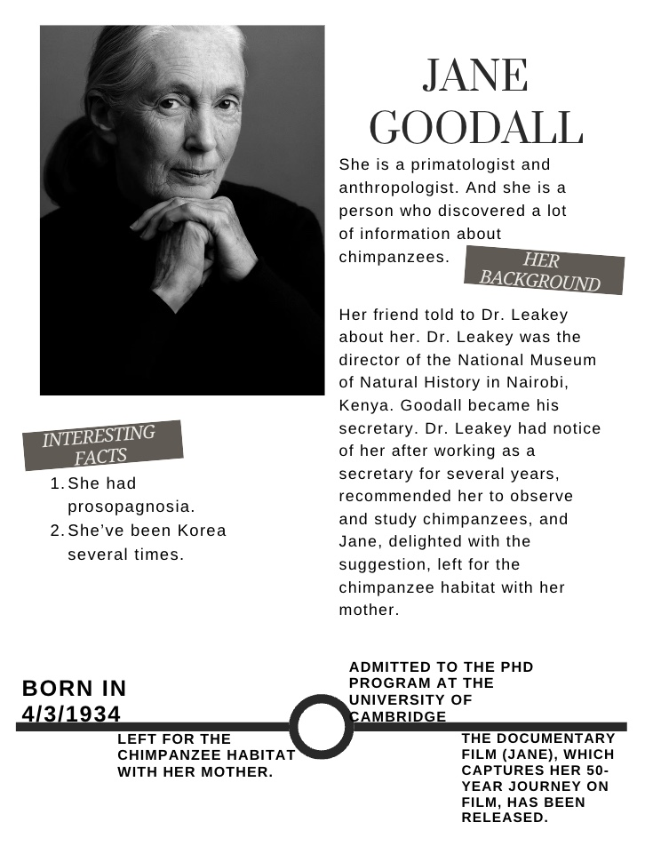

I've bought and played with
it many times, but this was
my first time making it
myself. It was the most fun
project for me.

I chose Jane Goodall one
of the female scientists.
I knew her before doing this project,
because she is the person who knows a most
informations of the chimpanzees.
so I made a informations
about her and a timeline.
So I think she is a really great person.